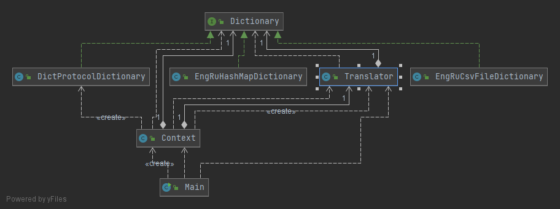

Despite the fact that we did a great job and made our application more flexible, we still have too many responsibilities in our Main class. As application logic and object configuration are quite separate task we may move one of them to a special dedicated class.
New structure removed some of the dependencies and make the application more flexible. 